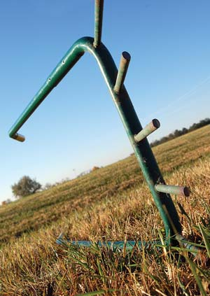
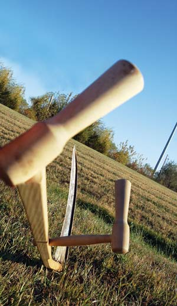
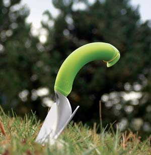
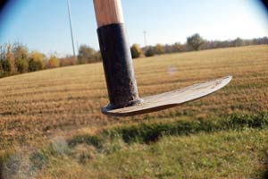
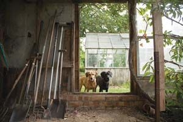

Best Low-Tech Tools
Simple hand tools such as the scythe, garden cart and broadfork are well-suited for the homestead garden.
By Harvey Ussery
February/March 2008
Humans use tools to shape our environment, but our tools shape us as well - our assumptions and ways of doing things. Most of us have grown up believing that machines are faster, more efficient and do the job better than the human-powered tools our grandparents used. But in many cases, those simple tools may be more appropriate for the task at hand. This often is true when working in your home garden.
Simpler Can be Better
Using human-powered garden tools has many advantages. First, consider the enormous difference in initial cost between hand tools and machines. Also, maintenance costs are likely to be much less with hand tools. It’s more likely that you’ll be able to handle repairs yourself, instead of resorting to a paid expert, too.
As for efficiency, we usually forget that human-powered tools are vastly more efficient than tools powered by fossil fuels - that is, they require less energy per unit of work. Further, every experienced gardener knows it is more efficient to prepare, plant and weed soil that is deep, mellow and retains its moisture. The tools that help us nurture productive soil are the tools that also are the most efficient in the long run.
When weighing the choice of powered versus low-tech tools, I offer a thought experiment: Say you want to convert a piece of established pasture sod to garden soil that is more fertile, productive and easily worked with each passing season. I propose that you could best accomplish this task using three simple and supremely low-tech tools: a scythe, a garden cart and a broadfork.
Why Not Use a Tiller?
It’s true that killing and turning under the established sod would be accomplished faster with a power tiller - in an afternoon, as opposed to a whole season with the alternative discussed below. However, someone once said that patience is a virtue, and that’s certainly true when it comes to nurturing productive garden soil.
Choosing a particular tool can shut off creative thought about alternatives. As the saying goes: If your only tool is a hammer, every task looks like a nail. Choosing to use a power tiller blinds you to an important question: Why till at all?
In fact, there are good reasons to avoid pulverizing and mixing soil layers, whether with a power tiller or any other tool. Soil is a complex, living community of organisms that compete and cooperate, and in the process alter soil conditions in profound ways.
Nothing is so important to building good soil as nurturing the diversity and population densities of soil organisms. You do that best by avoiding unnecessary tillage - which disrupts the soil community - and by feeding the soil with organic matter. You want your soil to become looser and more friable, or easily crumbled. A few low-tech tools can help speed this process.
Terrific Low-tech Tools
The scythe. Let’s assume for our thought experiment that you can leave some of your ground as pasture, and use it for growing mulches. (You also could include cover crops that can be cut for mulches in your garden-bed rotation, or grow mulches in the space between garden beds.) With a well-whetted scythe, you can cut these plants and use them to lay down a “kill mulch” heavy enough to smother the established sod in your new garden plot. To make the mulch even more effective, you can first put down a layer of newspaper or cardboard, recycling these carbon-rich organic materials right on the homestead.
The garden cart. Carrying large quantities of mulching materials by hand from one spot on your property to another would be exhausting. A low-tech alternative is a well-designed garden cart. It’s lightweight and easily moved, but has the capacity to carry big loads of kill mulch for your project. With bicycle wheels and a big U-shaped handle, the cart is easy to maneuver. With proper care, it will last forever. A machine-powered alternative - a dump trailer attached to a lawn tractor, for example - is massive overkill for most homestead jobs.
Once you’ve applied a kill mulch, the soil organisms underneath it will thrive in the enhanced moisture and moderated temperature and feast on the organic material in the mulch.
While it is true that the power tiller could “feed the soil” by turning under the established sod, each use of the power tiller disrupts the established soil communities - they must “start over” after each round of tillage. The soil community under your mulch experiences no such disruption. Instead, it will proliferate and thrive.
The broadfork. Actually, you can speed the desired changes in your soil by using a tool to loosen it - just so long as you do not mix or invert the natural layers of the soil profile, pulverize the “crumb structure” in the soil created by our soil organism friends, or disrupt their busy lives.
Enter the broadfork, a simple but effective tillage tool with 12- to 14-inch pointed tines welded to a stout bar and a pair of wooden or steel handles for leverage. The gardener stands on the bar to push it into the garden bed, pulls back on the handles to rock the tines and loosen the soil to their full length, then moves the broadfork over and repeats the process.
Please note that the broadfork is not appropriate for initially breaking up compacted ground. The kill mulch needs to do its work first. Then, once our hard-working friends under the mulch havemade some headway at “mellowing” the soil, you can start to use the broadfork to break it up further, allowing easier penetration by earthworms and roots.
It’s better to be satisfied initially with only being able to work the tines a few inches into the soil, rather than exhausting yourself by heroically forcing them into the still-compacted depths of the soil. As the soil in your garden beds becomes more friable each year, it becomes easier to use the broadfork to do whatever tillage is needed.
More Productive Soil
My own garden is about 6,000 square feet, and I’ve never regretted giving away my power tiller years ago. As the soil improves through soil-feeding and no-till practices, it’s less necessary to cultivate even with the broadfork. Eventually, it’s possible with most crops simply to rake out the beds and plant.
You can follow the initial kill mulches over your new garden ground with continual mulches in subsequent seasons. This will permit soil care to be largely no-till, and - together with strategies such as frequent cover cropping - you’ll get your soil into deep, friable, fertile condition sooner than you could with a power tiller.
“But wait a minute,” you may be thinking - “sooner than?” Aren’t power tools supposed to be faster? In my experience, in the race for deep, mellow, fertile soil that is easy to work, plant and weed - hand tools are the steady, plodding tortoise that reaches the finish line sooner than the power-tool hare, which starts off with such a dash.
Sources
Johnny’s Selected Seeds, 955 Benton Ave.; Winslow, ME 04901; (877) 564-6697
Peaceful Valley, P.O. Box 2209; Grass Valley, CA 95945; (888) 784-1722
Scythe Supply, 496 Shore Road; Perry, ME 04667; (207) 853-4750
NRG Hand Trowel
Rogue Hoes (Prohoe) 204 S. Munden Ave P.O. Box 87; Munden, KS 66959
Completing Your Tool Kit
Like me, most gardeners are suckers for new tools. We go on accumulating these over the years, then settling on those that offer a unique solution to our specific task.
Let’s briefly consider a few of the tools you will need for tasks around the homestead. In all cases, I recommend spending the extra money up front to buy well-designed and soundly made tools. In the long run, such tools are more pleasant, effective and even safer to use. Indeed, they are cheaper: Buying a well-made tool often costs less than buying and later replacing a shoddy tool.
Spades and shovels. There is an endless variety of spades (for cutting into compacted earth), shovels (for moving looser earth) and scoops (with larger, more bowl-shaped heads for moving even looser material like ground corncobs). Some will have long handles, while others have shorter handles ending in a D-shaped grip for working in tighter quarters. Most gardeners end up with a number of variations on the theme.
Wheelbarrow. While the garden cart is better for bulkier loads of lighter materials, the wheelbarrow is better for dense, heavy loads such as earth and rocks. The best tribute to the wheelbarrow I’ve seen is the beautiful pond at the old Nearing place in Maine, which Scott Nearing dug out by hand, one barrow load at a time.
Rakes. You’ll want a hay rake to gather up grass for mulches. A good hay rake is light, with a wide head securely attached to the handle. I’ve had trouble with both wooden and nylon teeth breaking when they snag on tough weeds, and am still looking for my ideal hay rake. Another must-have is the garden rake, with close-set steel tines at right angles to the handle, for raking out bumps and clods, as well as smoothing seedbeds in preparation for planting.
Spading fork. This is a digging fork with a D-grip handle and stout tines either square or a bit flattened in cross-section. In a small garden, this type of fork is sometimes used for loosening the soil without turning it topsy-turvy, in lieu of the broadfork. In any garden, it’s a great tool for planting the larger potted transplants, digging potatoes or for uprooting small saplings or big, tough-rooted weeds.
Other forks. Again, you will end up with several versions of forks, depending on the nature of the materials you typically handle. A hay fork is essential for lifting raked hay into the cart, then distributing it as mulch. Handling manure, however, requires a wider, more scoop-shaped head with more tines, set closer together.
Hoes. The gamut runs from heavy “grading hoes” for shaping ridges (as for sweet potatoes) or grubbing out saplings and big, tough weeds - to crescent-shaped Asian style hoes for delicate weeding work around established crop plants - to “action hoes” with oscillating heads that cut weeds off beneath the soil line on both out-stroke and in-stroke - to the “collineal hoe” designed by Eliot Coleman, with its thin, narrow, razor sharp blade, used from a fully standing position, like sweeping with a broom.
Harvey Ussery lives on a small homestead in Virginia, with his wife, Ellen. You can visit their Web site and read more of Harvey’s articles at here, including much more about building fertile soil. In the next issue, Harvey will discuss growing medicinal herbs.
 HARVEY USSERY The author uses a broadfork to prepare garden soil for planting. |
 MATTHEW T. STALLBAUMER A broadfork helps break new garden soil while doing as little damage to the soil structure as possible. |
 MATTHEW T. STALLBAUMER A scythe is a handy tool for cutting tall grasses and other plants that can be used for mulches. |
|
 PEYTON BALDWIN The curved grip on the NRG trowel makes it work much better than traditional trowels. |
 MATTHEW T. STALLBAUMER This high-quality, hand-crafted Rogue hoe is made from a recycled agricultural disc blade. |
 ISTOCKPHOTO/JEAN FROOMS Gardeners often end up with a variety of rakes, shovels, scoops and hoes, all particularly suited for different tasks. |